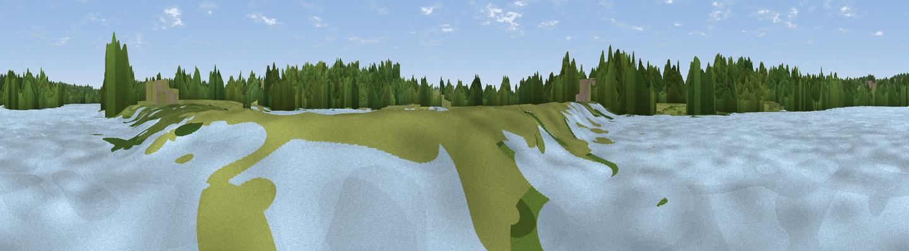

Viewpoint near Harrold
#45040 in England · top 79% of its area beats it · near HarroldWhere it is
The exact computed spot (SP 95841 56790). Click the marker for map links.
The view, rendered

A 360° render of this exact spot computed from the terrain model, tree cover and land cover — summer colours, afternoon light, calibrated against photographs of famous viewpoints. Real trees, hedges and buildings will differ in detail.
The panorama
Grey silhouette: terrain skyline in each direction (720 bearings, Earth curvature and refraction included). Dashed green: skyline with trees (+15 m) and buildings (+8 m) as obstacles. Blue strip: how far the ground is visible on each bearing.
Where the view opens
Wedge length = distance to the farthest visible ground on that bearing (vegetation-aware). Rings at 10, 25 and 50 km.
What fills the view
32% grassland · 28% woodland · 20% water · 18% cropland · 2% built-up ·
Angular shares of the visible panorama (visual magnitude), not map area. Landscape diversity 0.64 (0–1 Shannon).
Key numbers
More beautiful places nearby
The staircase of upgrades: each row has a higher view potential than everything closer. Driving times are estimates from straight-line distance, calibrated against real road routing — check an actual route before setting out.
| Place | Direction | Drive | Score |
|---|---|---|---|
| Beacon Hill | NW · 8 km | ~16 min | 27.4 |
| Olney Beacon | WSW · 10 km | ~19 min | 28.1 |
| Viewpoint near Sherington | SSW · 13 km | ~23 min | 36.6 |
| Viewpoint near Finedon | NNW · 14 km | ~26 min | 47.5 |
| Viewpoint near Lidlington | S · 18 km | ~32 min | 49.5 |
| Viewpoint near Lidlington | S · 18 km | ~32 min | 55.0 |
| Viewpoint near Lidlington | S · 19 km | ~32 min | 56.0 |
| Viewpoint near Bow Brickhill | SSW · 23 km | ~38 min | 57.0 |
52.20102, -0.59906 · source: osm viewpoint · position refined by local search. Computed location — check access rights before visiting.